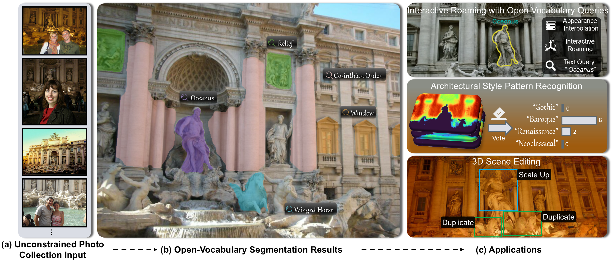
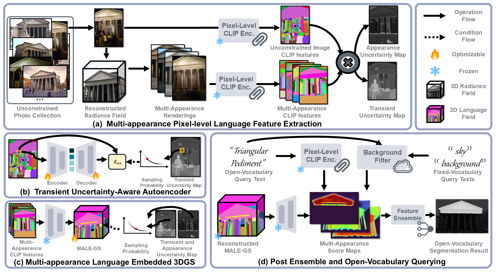
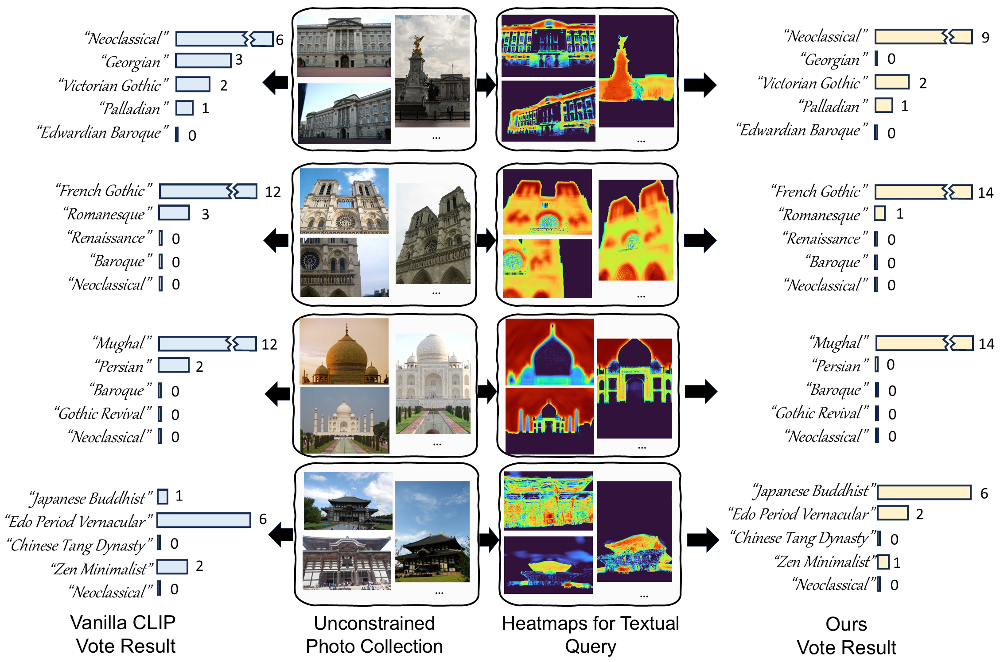
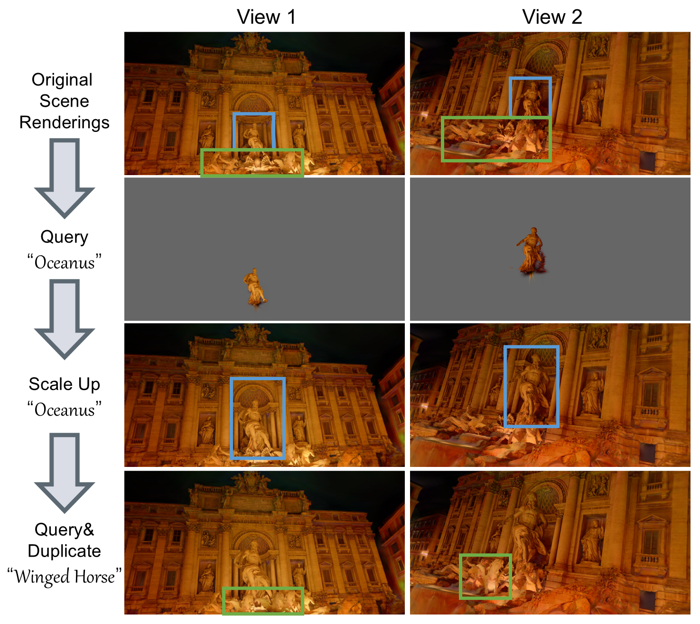
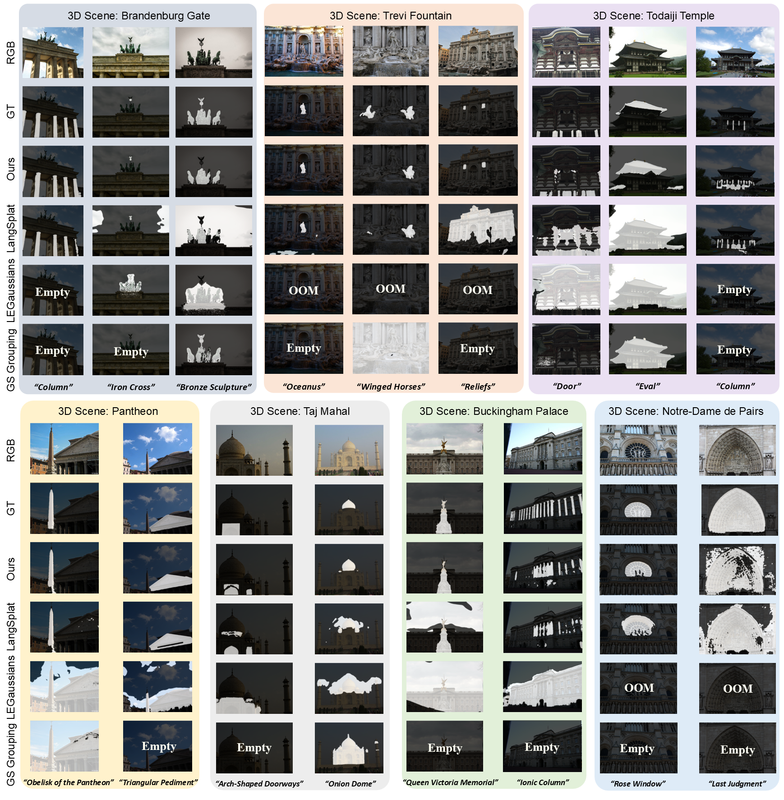

An Application of Our Method: Interactive Roaming with Open-vocabulary Queries.
TL;DR
Motivation

Over the past few decades, researchers have used images collected from the Internet to reconstruct landmarks and historic sites, enabling their digital exploration and navigation. However, when it comes to understanding architectural styles and structural knowledge, people still primarily rely on static text-image pairs, lacking immersive visual experiences. Can we take inspiration from successful 3D in-the-wild reconstruction methods to achieve low-cost fine-grained 3D understanding of architectural components from Internet-sourced unconstrained photo collections? This could help users intuitively grasp a building’s structure, style, and historical context, enriching their engagement with iconic architecture.
Method

(a) Our method takes an unconstrained photo collection as input, which contains transient occluders and appearance variations in each image. (b) After optimization, our method achieve high-quality open-vocabulary segmentation. (c) The proposed method supports various applications, including interactive roaming with open-vocabulary queries, architectural style pattern recognition, and 3D scene editing.
Open-Vocabulary Segmentation Results
NOTE: Experience sync issues with the GIFs? Simply refresh the webpage to synchronize playback.

Renderings

Learned Language Feature
Renderings

OV Segmentation Result
Learned Language Feature
Query: "Column"

OV Segmentation Result
Learned Language Feature
Query: "Iron Cross"

Renderings

Learned Language Feature
Renderings

OV Segmentation Result
Learned Language Feature
Query:"Obelisk of the Pantheon "

OV Segmentation Result
Learned Language Features
Query:"Triangular Pediment "

Renderings

Learned Language Feature
Renderings

OV Segmentation Result
Learned Language Feature
Query: "Oceanus"

OV Segmentation Result
Learned Language Feature
Query: "Reliefs"
Applications
1. Interactive Roaming with Open Vocabulary Queries
The proposed method can seamlessly integrate with in-the-wild radiance field reconstruction approaches. We developed an interactive system for users to remotely explore landmarks like the Trevi Fountain, with free-viewpoint roaming, lighting variations, and open-vocabulary queries. Please watch the video at the top of the webpage.
2. Architectural Style Pattern Recognition
Our method is also effective for architectural style pattern recognition. Compared to vanilla CLIP, our 3D language field-based method achieves more accurate recognition.
Additionally, we made an interesting discovery: the intermediate results of architectural style pattern recognition, specifically the heatmap of the fused score map, can be viewed as a visualization of "what makes Buckingham Palace a neoclassical building."
3. 3D Scene Editing
Our method can be applied to 3D segmentation and scene editing. For example, we query and edit the "Oceanus" and "Winged Horse" in the Trevi Fountain, scale, duplicate, and manipulate the selected 3D content, thereby creating novel 3D scenes.
Benchmark and Comparison
While benchmarks and evaluation schemes exist for well-captured photo collections, none have been established for outdoor unconstrained scenes. Therefore, we introduce Photo Tourism Open-Vocabulary Segmentation (PT-OVS) dataset, a new benchmark dataset derived from the public Photo Tourism, providing dense annotations for seven scenes, including architectural components and their historical contexts, such as the "Rose Window" and "Last Judgment" in Notre-Dame de Paris.
 Experimental results show that our method significantly outperforms state-of-the-art methods in segmenting textual descriptions related to architectural components, while enabling applications such as interactive roaming with open-vocabulary queries, architectural style pattern recognition, and 3D scene editing.